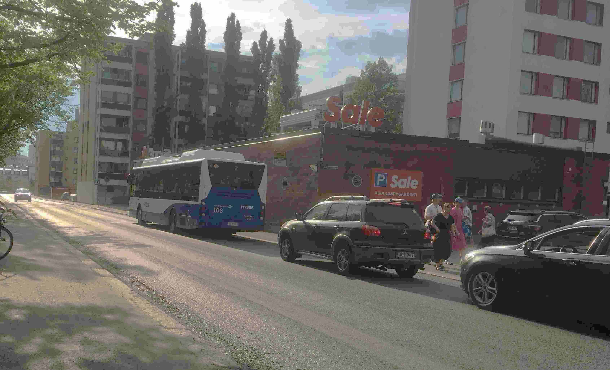

Moi, onnistuuko sellainen järjestely että tavattaisiin Tammelan Sale-lähimarketin sisäänkäynnin edessä?
Paikka on parikolme korttelia Tammelantorista suoraan pohjoiseen, Pohjolankadulla. Paikalla on esim. bussilinjan numero 2 pysäkki, pysäkin nimi Osmonmäki, pysäkin numero 0550. Linja 2 menee parhaimmillaan n. 10 minuutin välein. Jos et käytä bussia, let me know. Tai jos saavut henkilöautolla, osoitan sinulle yhden parkkipaikoistani. Ja tässähän fillaroidaan vain parin kolmen korttelin matkoja, joten mitään erityistä valmistautumista ei tarvita? Säävaraus, huonon kelin sattuessa kannattaa uudelleentarkastella suunnitelmia.